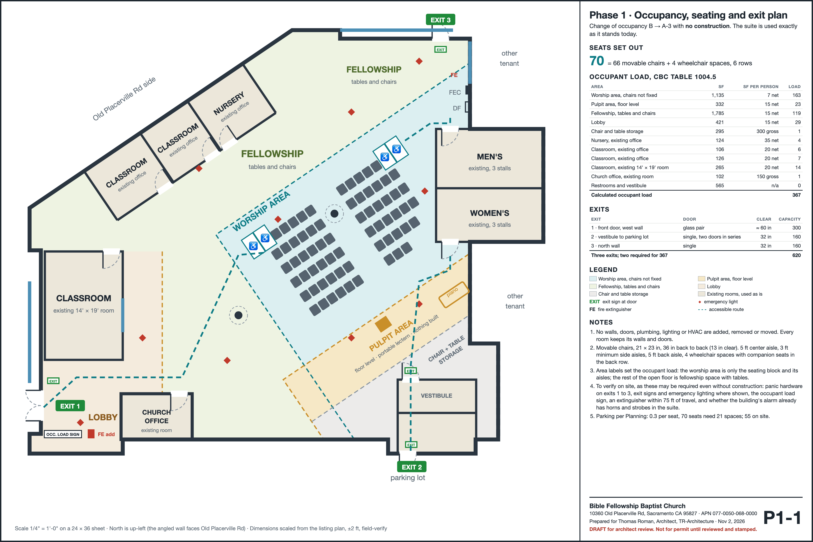
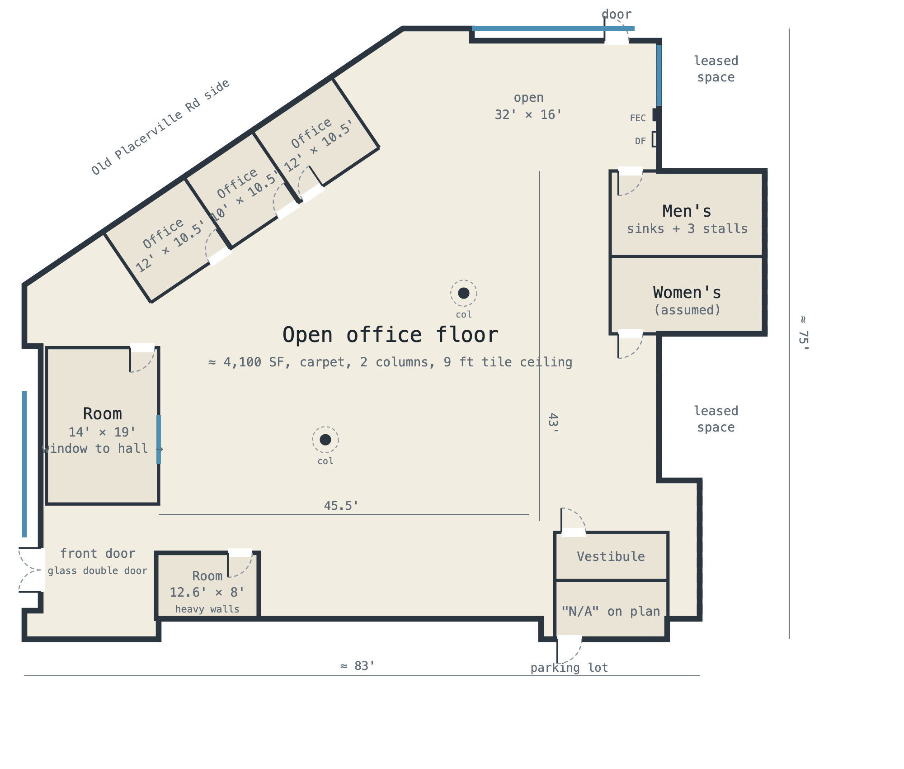
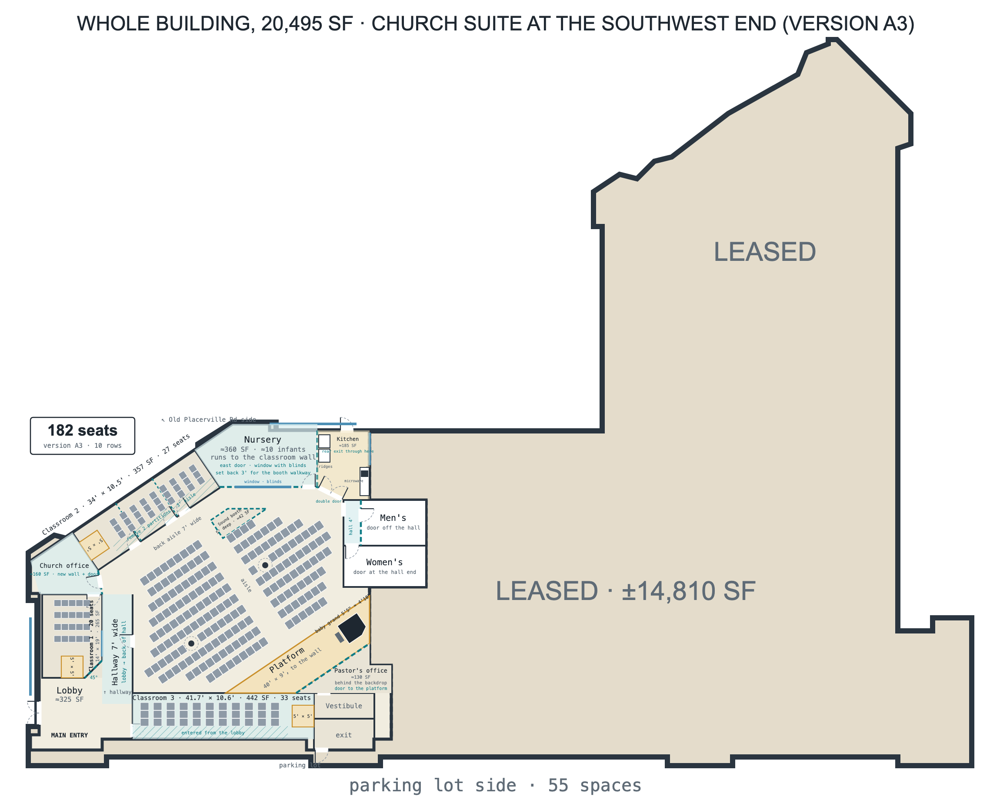
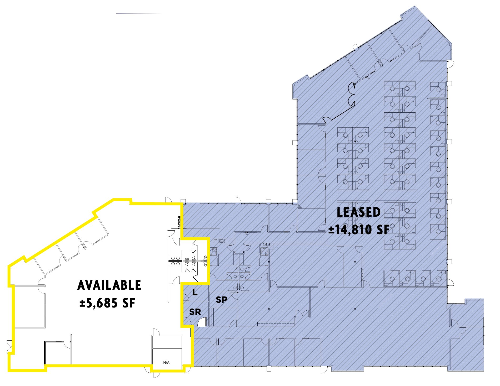
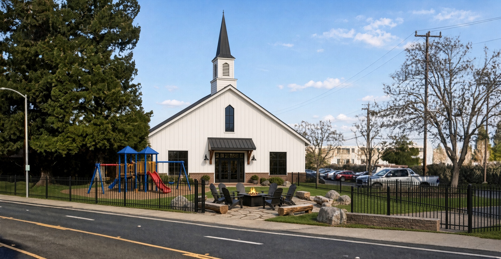
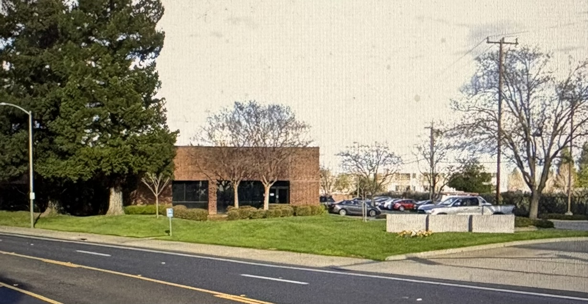
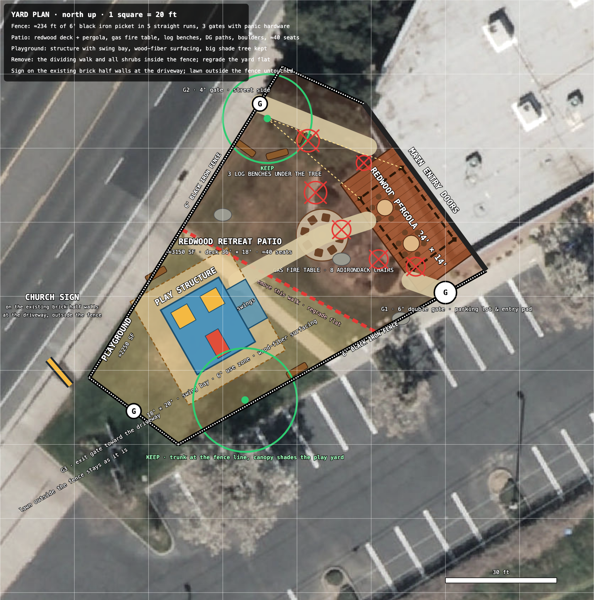
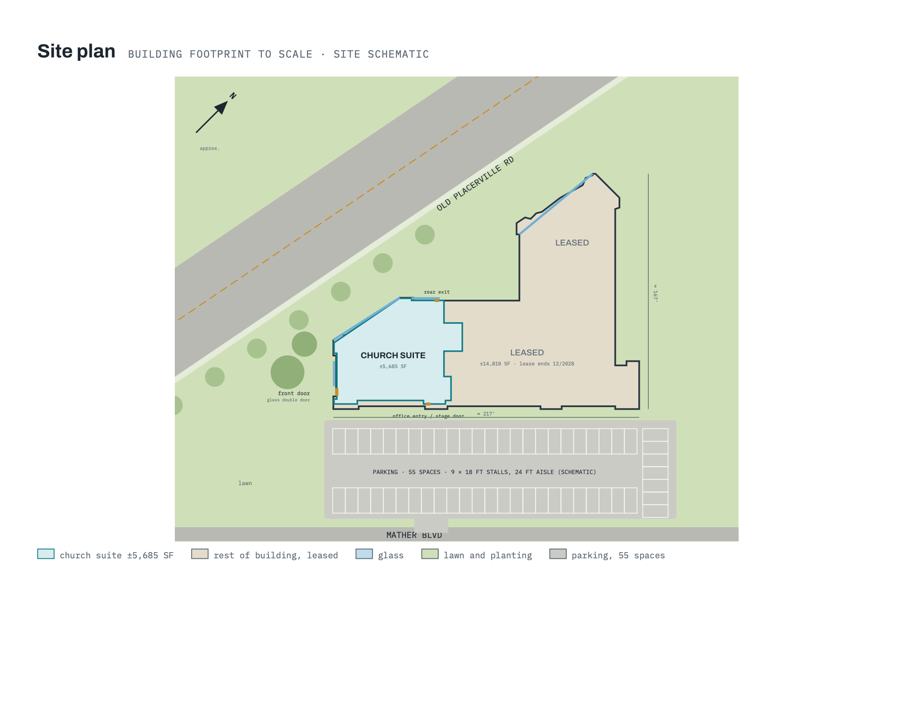
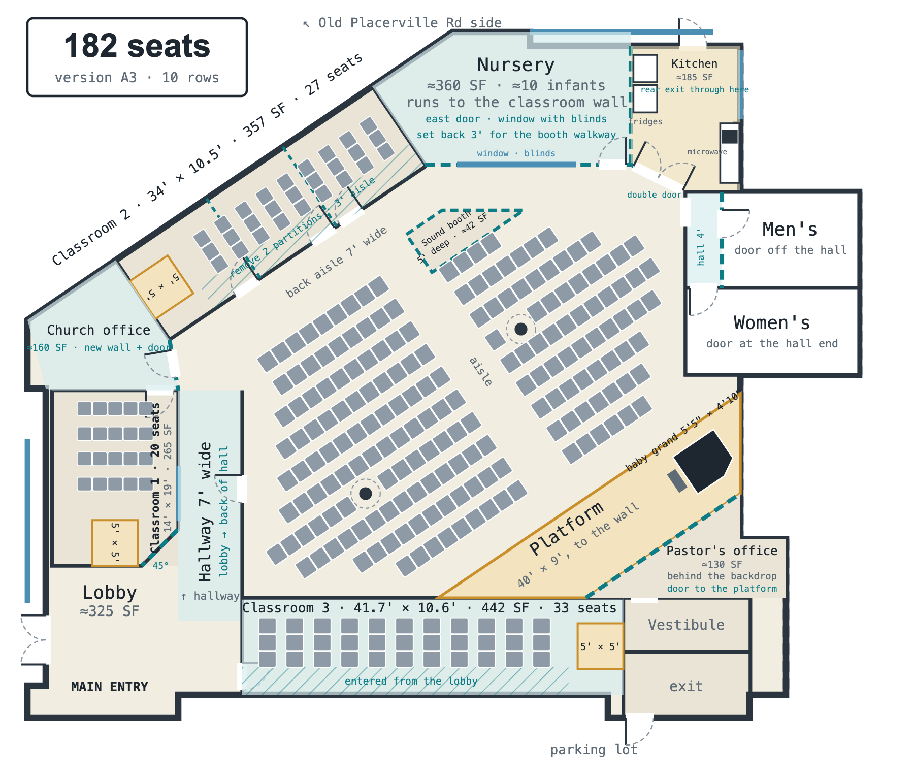
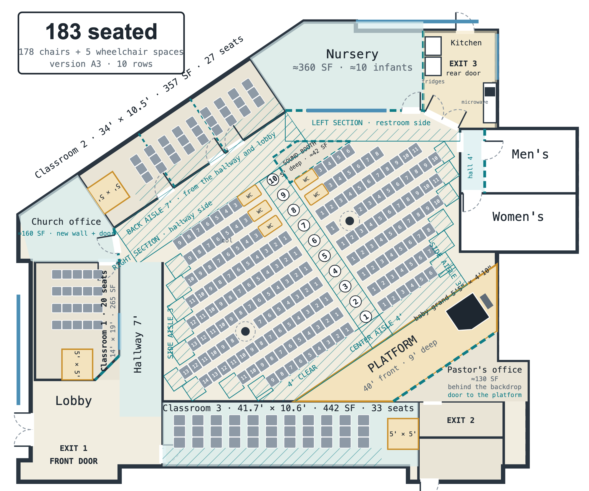

Bible Fellowship Baptist Church. Drawings for Thomas Roman, Architect. Dimensions are scaled from the listing plan, ±2 ft, until field-measured. Updated Nov 2, 2026.
Change of occupancy from B to A-3 with no walls, doors, plumbing, lighting or HVAC changed. 70 seats: 66 movable chairs and 4 wheelchair spaces. Area labels set a calculated occupant load of 367. Three existing exits.




A full-width white false front about 2 to 3 ft deep over the existing flat roof, with a steeple and dark metal; a 6 ft black iron picket fence around the lawn; a playground and an adult patio inside it; the sign on the existing brick half walls at the driveway. No interior work.




Site plan, elevations and entry concept
Non-structural partitions inside the suite: nursery, hallway, classrooms, offices, kitchen and a corner platform. 183 seats. Not part of the Phase 1 or Phase 2 drawings.

